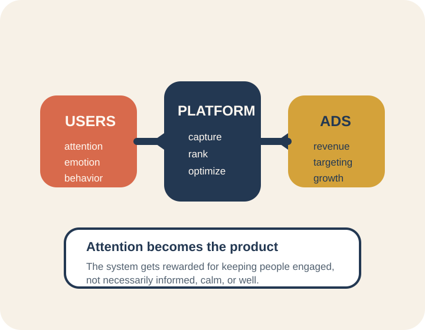

Habits shape character
If a platform trains constant checking, outrage, or dependency, that is already an ethical outcome.
Web Programming Course
Aristotle University of Thessaloniki
A 15-minute talk about ethical programming, ethical AI, the attention economy, and how developers can resist systems that scatter thought.
About the speaker
Anastasios Vanis
Opening question
If code can influence what millions of people think and feel, what responsibilities do we have as developers?
Why this matters now
In older software eras, bugs mostly blocked tasks. Today, product decisions can affect mental health, misinformation, polarization, and the quality of public discourse.

Social media
Most large platforms reward attention capture because advertising business models reward time-on-platform. The result is a conflict: what keeps users engaged is not always what helps them think clearly or live well.
The Social Dilemma
The ethical problem is not only harmful content. It is behavior engineering at scale, often without meaningful consent.
Core claim
Platforms do not only predict behavior. They can steer behavior.
Cognition

A philosophical lens
Aristotle helps us ask one practical question: what kind of habits are our systems training in people?
If a platform trains constant checking, outrage, or dependency, that is already an ethical outcome.
Notifications, feeds, and ranking systems do not just serve users. They also teach users how to behave.
Ethical programming should strengthen autonomy, reflection, and informed choice instead of compulsion.
Are we building systems that help people flourish, or systems that keep them reactive and distracted?
Ethical programming
Every product decision creates winners, losers, and externalized costs.
Behavioral nudges become unethical when they exploit vulnerability.
Repeated defaults become culture, and culture becomes infrastructure.
Ethical AI
Models replicate unequal data and unequal history.
Users cannot contest decisions they cannot understand.
Personalization can target weakness rather than support goals.
Data collection expands far beyond legitimate need.
Practical framework
Who benefits?
Who might be harmed?
What behavior are we incentivizing?
Can users understand and control what happens?
Could we publicly defend this design tomorrow?
This can be used in sprint planning, PR review, design critique, or launch readiness.
Coding example
def send_notification(user_id, message):
notification = {
"priority": "high",
"sound": True,
"vibration": True,
}
send_time = calculate_when_user_most_vulnerable()
schedule_notification(notification, send_time)
track_engagement_for_manipulation(user_id)Overrides user settings, targets weak moments, tracks behavior for manipulation.
def send_notification(user_id, message):
prefs = get_user_notification_preferences(user_id)
if not prefs["notifications_enabled"]:
return {"status": "skipped"}
if is_in_user_quiet_hours(user_id):
return {"status": "deferred"}
schedule_notification(message, prefs["preferred_send_time"])
log_notification_sent(user_id, reason="user_request")Respects consent, quiet hours, user timing, and transparency.
For web programming students
Consent before collection
Explain why content appears
Design for stopping, not compulsion
Test bias and abuse cases
Appendix